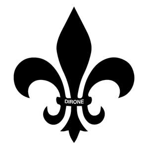

Trade Mark Journal No.2025/014 4 April 2025
UK00004174081 14 March 2025 (9,18,25)

- Class 9
- Glasses; Spectacles [glasses]; Lenses for glasses; Glasses frames; Frames for glasses; Eye glasses; Anti-glare glasses; Glasses, sunglasses and contact lenses; Frames for eye glasses; Replacement lenses for glasses; Sun glasses; Protective glasses; Reading glasses; Spectacle glasses; Smart glasses; Sports glasses; Glasses for sports; Dustproof glasses; Ski glasses; Eyeglasses; Glasses cases; Lenses for eyeglasses; Covers for glasses; Frames for spectacles and sunglasses; Cyclists' glasses; Shooting glasses [optical]; Sports' glasses; Lenses for sunglasses; Frames for eyeglasses; Antiglare glasses (anti-glare); Lenses for spectacles; Sunglasses; Cases for eyeglasses and sunglasses; Boxes [cases] for glasses; Frames for sunglasses; Sunglasses frames; Goggles; Frames for spectacles; Clip-on sunglasses; Sunglass lenses; Safety glasses for protecting the eyes; Protective eyeglasses; Eyeglass lenses; Spectacles; Eyeglasses for sports; Eyewear; Plastic lenses; Fashion eyeglasses.
- Class 18
- Boston bags; Drawstring bags; Bum bags; Belt bags and hip bags; Carry-all bags; Duffle bags; Sling bags; Crossbody bags; Duffel bags; Belt bags; Cross-body bags; Bags for umbrellas; Hip bags; Toiletry bags; Gladstone bags; Barrel bags; Luggage bags; Umbrella bags; Bags; Drawstring pouches.
- Class 25
- Clothing; Knitwear [clothing]; Jackets [clothing]; Ready-to-wear clothing; Woolen clothing; Furs [clothing]; Garments for protecting clothing; Layettes [clothing]; Clothing layettes; Linen clothing; Headbands [clothing]; Headbands for clothing; Gloves [clothing]; Gloves as clothing; Clothes; Kerchiefs [clothing]; Jerseys [clothing]; Denims [clothing]; Shorts [clothing]; Cashmere clothing; Capes (clothing); Gabardines [clothing]; Silk clothing; Leather clothing; Clothing of leather; Leather (Clothing of -); Collars [clothing]; Parts of clothing, footwear and headgear; Knitted clothing; Hoods [clothing]; Windproof clothing; Embroidered clothing; Corsets [clothing, foundation garments]; Wristbands [clothing]; Belts [clothing]; Belts for clothing; Rainproof clothing; Waterproof clothing; Casual clothing; Visors [clothing]; Jackets being sports clothing; Jackets (Stuff -) [clothing]; Stuff jackets [clothing]; Bottoms [clothing]; Playsuits [clothing]; Ready-made clothing; Clothing for leisure wear; Latex clothing; Trunks being clothing; Woven clothing; Infant clothing; Leisure clothing; Drawers [clothing]; Drawers as clothing; Ties [clothing]; Clothing for sports; Sports clothing; Athletic clothing; Clothing for children; Muffs [clothing]; Clothing for babies; Tops [clothing]; Clothing for infants; Clothing for cycling; Weatherproof clothing; Pockets for clothing; Fabric belts [clothing]; Water-resistant clothing; Handwarmers [clothing]; Clothing for skiing; Chaps (clothing); Thermal clothing; Men's clothing; Dance clothing; Mitts [clothing].
EIZO DIRONE LTD